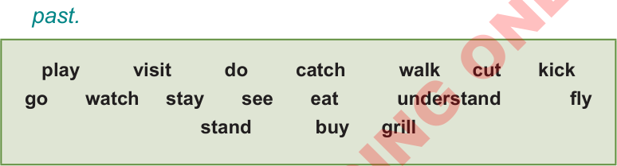

Note:
In the last examples in Activity 4.1(a), ‘-ed’ was added to the verb to express the past.
But, the examples in Activity 4.1(b), the verbs change their forms completely when expressing the past.
(c)
Change the following verbs into simple past.
Then, write a sentence for each verb to describe actions or talk about the past.
